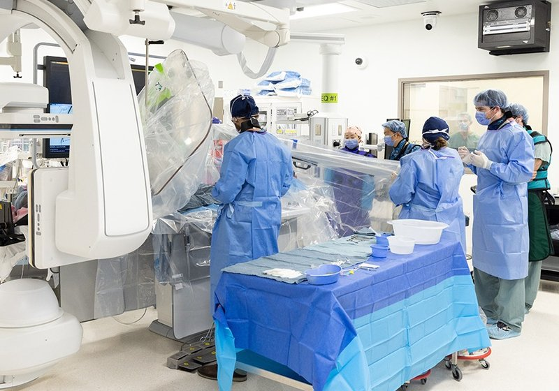

Commercial and clinical-stage systems · n1_remedy2025
N1
N1 System

1 / 3


- Family
- Commercial and clinical-stage systems (clinical-stage)
- Devices
- up to 4 passive instruments (chen2026_teleoperation via S8)
- Degrees of freedom
- N.R.
- Push
- Not reported
- Twist
- Not reported
- Tested up to
- Human
- Sim-to-real
- None found — No simulation-trained controller found for this robot.
Testing
- Highest level
- Human
- What was tested
- fully remote brain angiogram between two Toronto hospitals, Oct 2025, operator V. Mendes Pereira (therobotreport, ieee spectrum via search; case count N.R.); remote silicone-model navigation over 12,800 km (chen2026_teleoperation)
- Key numbers
- US$35M raised (Axios Oct 2025 via therobotreport); 45 patents (search summary)
Mechanism
- Push (translation)
- N.R.
- Twist (rotation)
- N.R.
- Device range
- N.R.
- Target anatomy
- neurovascular / general (stroke, MI, trauma per company)
Sensing and interface
- Force sensing
- none reported
- Leader and haptics
- N.R.
- Imaging
- remote operation across hospitals
- Sterility
- N.R.
Size
- Footprint (mm)
- N.R.
- Mass (kg)
- N.R.
Simulation
- Simulation model
- none found
- Sim-trained controller
- none found
Versions
- Lineage
- N1
Sources
- Remote Teleoperation of Endovascular Intervention Robots: A Systematic Review · IEEE Transactions on Medical Robotics and Bionics, 2026 · doi:10.1109/TMRB.2026.3681030 [chen2026_teleoperation]
Notes
- Notes
- No clearance found (June 2026 summaries say N1 not yet for sale). Mission Thrombectomy exclusive robotics partner (Oct 2025); Australian Stroke Alliance partnership. Head of Regulatory Affairs job posting seen.
This record
- Read level
- web
- Picture
- https://unityhealth.to/wp-content/uploads/2025/09/2509-cut-the-cord-1500-1000c.jpg (Unity Health Toronto story https://unityhealth.to/2025/11/first-robotic-assisted-neurovascular-procedure/) ↗ — licence: press image (Unity Health Toronto; photographer credit on the page); grade C
- Picture changes
- cropped (380,250)-(1280,880) of 1500x1000; not upscaled; no tone change; no erasing
- Found by
- commercial: Search of commercial and clinical-stage systems.
- Data
- JSON · YAML:
records/robots/n1_remedy2025.yaml - Correction
- Suggest a correction [repository not created yet]